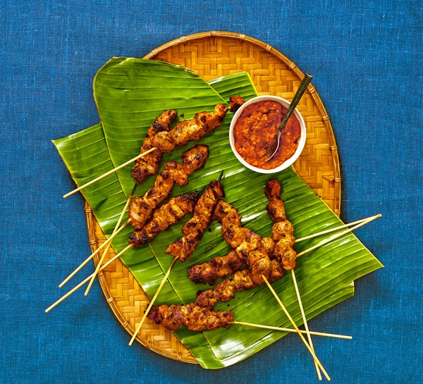

Back to Index
Pork Satay

Indonesian pork satay, also known as "sate babi" in Indonesian, is a popular dish in Indonesia consisting of skewered and grilled pork meat.
It's a variation of the more common chicken or beef satay. We'd like to make our version of satay using rica-rica seasoning.
Rica-rica is an Indonesian sambal laced with chilli, ginger and lime, and works equally well with prawns, chicken or fish fillets for a fiery BBQ treat.
Ingredients: Main
- 600g pork tenderloin fillet, cut into 2cm cubes
- Juice of 1 lime
- Cooked rice, to serve
Ingredients: Seasoning
- 2 garlic cloves, coarsely chopped
- 2 long shallots, coarsely chopped
- 2-3 red bird's eye chillies
- 2 large red chillies
- 20g ginger, thinly sliced
- 2 tbsp coconut oil or sunflower oil
- Juice of 1 lime
Instructions
- Soak 12-14 long bamboo skewers in water for 1 hr. To make the rica-rica, combine all the ingredients, except the oil and lime, in a blender and whizz to a fine paste.
- Heat the oil in a frying pan over medium heat. Add the rica-rica and fry for 6-7 mins. Season with the lime juice and some salt, and fry for another 2 mins.
- To make the satay, season the pork with ½ tsp of salt and put it in a bowl with half of the rica-rica and the lime juice, mix well and set aside to marinate for 10 mins.
- Heat a barbecue or a griddle pan over a high heat. Thread four pieces of pork onto each skewer. Grill the pork for 5-6 mins, brushing it with marinade and turning often, until cooked through.
- Transfer the skewers to a plate. Serve with rice and the remaining rica-rica.
Back to Top